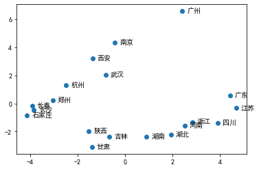

# 实验介绍
# 实验名称
自然语言处理第一次实验 -- 词向量的训练与特性及关系可视化
# 实验目的
了解分词与词向量的训练。
分词就是将句子、段落、文章这种长文本，分解为以字词为单位的数据结构，方便后续的处理分析工作。词向量，顾名思义就是用来表示词的向量，也可被认为是词的特征向量或表征。把词映射为实数域向量的技术也叫词嵌入。我们通常在训练语言模型的同时得到词向量。
了解 Word2Vec 词向量的特性。
词向量本质是将一些低维、离散、不带任何意义的序号映射成带有特定任务性质的高维特征。为了研究这些特性，可以显式地通过余弦距离来比较两个词的相似性，也可以通过词间的类比关系来探查词向量的影藏特性，另外还可以通过 PCA 降维的方式将词向量可视化。
# 实验环境
python 3 + jieba + gensim + sklearn + matplotlib + NumPy + seaborn
python3
除了高性能外，拥有 NumPy、SciPy 等优秀的数值计算、统计分析库。TensorFlow、Caffe 等著名的深度学习框架都提供了 Python 接口。
jieba
jieba 是一款优秀的 Python 第三方中文分词库，支持三种分词模式：精确模式、全模式和搜索引擎模式。
gensim
gensim 是一款开源的第三方 Python 工具包，用于从原始的非结构化的文本中，无监督地学习到文本隐层的向量表达。它支持包括 TF-IDF，LSA，LDA，和 word2vec 在内的多种算法。
Sklearn
Sklearn (全称 Scikit-Learn) 是基于 Python 语言的机器学习工具。它建立在 NumPy, SciPy, Pandas 和 Matplotlib 之上，Sklearn 里面有六大任务模块：分别是分类、回归、聚类、降维、模型选择和预处理。
Matplotlib
Matplotlib 是 Python 的绘图库，可与 NumPy 一起使用，提供了一种有效的 MATLAB 开源替代方案。
NumPy
NumPy 是 Python 语言的一个扩展程序库，支持大量的维度数组与矩阵运算，此外也针对数组运算提供大量的数学函数库。
Seaborn
Seaborn 是基于 Matplotlib 的图形可视化 Python 包，在 Matplotlib 的基础上进行了更高级的封装，使得作图更加容易。
# 实验内容
# 实验方案设计
使用 jieba 分词工具进行分词，使用方法：jieba.cut (text);
python 1
2
3import jieba
seg_list = jieba.cut("他来到上海交通大学", cut_all=False)
print("/".join(seg_list))
他 / 来到 / 上海交通大学
使用 gensim 中的 Word2Vec 模型训练词向量：
model = Word2Vec (common_texts, size=100, window=5, min_count=1, workers=4)；min_count 指定了需要训练词语的最小出现次数，默认为 5；size 指定了训练时词向量维度，默认为 100；worker 指定了完成训练过程的线程数，默认为 1 不使用多线程。
使用训练好的词向量对指定的词（2 个例子）进行相关性比较：model.similarity (' 中国 ',' 中华 ')；
python 1
2
3
4
5
6
7
8
9
10
11
12
13
14
15
16
17import jieba
from gensim.models import word2vec
if __name__ == "__main__":
with open(r"E:\自然语言处理\2021自然语言处理第一次实验\实验一> 数据集.txt", encoding='utf-8') as f1:
document = f1.read()
document_cut = jieba.cut(document)
result = ' '.join(document_cut)
with open(r"E:\自然语言处理\2021自然语言处理第一次实验> \lab1_dataset_segment.txt", 'w', encoding='utf-8') as f2:
f2.write(result)
corpus = r"E:\自然语言处理\2021自然语言处理第一次实验> \lab1_dataset_segment.txt"
sentences = word2vec.LineSentence(corpus)
model = word2vec.Word2Vec(sentences, vector_size=100, window=20, min_count=1)
model.save(r"E:\自然语言处理\2021自然语言处理第一次实验 \word2vec.model")
model.wv.save_word2vec_format(r"E:\自然语言处理\2021自然语言> 处理第一次实验\w2v.txt")
r = model.wv.similarity('中国', '中华')
print(r)0.45231482
python 1
2r = model.wv.similarity('世界', '全球')
print(r)0.7441377
使用训练好的词向量选出与指定词（2 个例子）最相似的 5 个词：model.wv.most_similar (positive=[' 武汉 '], topn=5);
python 1
2
3
4
5
6from gensim.models import word2vec
import gensim
path = r'E:\自然语言处理\2021自然语言处理第一次实验\word2vec.model'
wv_model = gensim.models.Word2Vec.load(path)
r = wv_model.wv.most_similar(positive=['武汉'] , topn=5)
print(r)[(' 沈阳 ', 0.9188286066055298), (' 成都 ', 0.9137787222862244), (' 郑州 ', 0.8937368392944336), (' 天津 ', 0.8855016827583313), (' 哈尔滨 ', 0.8804143667221069)]
python 1
2r = wv_model.wv.most_similar(positive=['上海'] , topn=5)
print(r)[(' 深圳 ', 0.8482241034507751), (' 天津 ', 0.8347505927085876), (' 广州 ', 0.8052346110343933), (' 广东 ', 0.7736815810203552), (' 成都 ', 0.7624819874763489)]
使用训练好的词向量选出与指定词类比最相似的 5 个词（2 个例子），如湖北 - 武汉 + 成都 = 四川： model.wv.most_similar (positive=[' 湖北 ', ' 成都 '], negative=[' 武汉 '], topn=5);
python 1
2
3
4
5
6from gensim.models import word2vec
import gensim
path = r'E:\自然语言处理\2021自然语言处理第一次实验 \word2vec.model'
wv_model = gensim.models.Word2Vec.load(path)
r = wv_model.wv.most_similar(positive=['湖北', '成都'], negative=['武汉'], topn=5)
print(r)[(' 河南 ', 0.8770621418952942), (' 安徽 ', 0.8735557198524475), (' 河北 ', 0.8696352243423462), (' 吉林 ', 0.8685503602027893), (' 湖南 ', 0.8605893850326538)]
python 1
2r = wv_model.wv.most_similar(positive=['江苏', '长沙'], negative=['南京'], topn=5)
print(r)[(' 黑龙江 ', 0.8322128653526306), (' 吉林 ', 0.8317105174064636), (' 湖北 ', 0.8213458061218262), (' 浙江 ', 0.8065339922904968), (' 辽宁 ', 0.8054839968681335)]
使用 sklearn 中的 PCA 方法对列表 [' 江苏 ', ' 南京 ', ' 成都 ', ' 四川 ', ' 湖北 ', ' 武汉 ', ' 河南 ', ' 郑州 ', ' 甘肃 ', ' 兰州 ', ' 湖南 ', ' 长沙 ', ' 陕西 ', ' 西安 ', ' 吉林 ', ' 长春 ', ' 广东 ', ' 广州 ', ' 浙江 ', ' 杭州 ']（可换成其他）中的所有词的词向量进行降维并使用 seaborn 和 matplotlib 将其可视化：
python 1
2
3
4
5
6
7
8
9
10
11
12
13
14
15
16
17
18
19
20
21
22from sklearn.decomposition import PCA
import matplotlib.pyplot as plt
import seaborn as sns
embeddings = wv_model.wv['江苏', '南京', '四川', '湖北', '武汉',\
'河南', '郑州', '甘肃', '湖南', '长沙', '石家庄',\
'陕西', '西安', '吉林', '长春', '广东', '广州', '浙江', '杭州']
pca = PCA(n_components=2)
results = pca.fit_transform(embeddings)
plt.rcParams['font.sans-serif']=['SimHei'] #用来正常显示中文标签
plt.rcParams['axes.unicode_minus'] =False
x = results[:,0]
y = results[:,1]
label = ['江苏', '南京', '四川', '湖北', '武汉',\
'河南', '郑州', '甘肃', '湖南', '长沙', '石家庄',\
'陕西', '西安', '吉林', '长春', '广东', '广州', '浙江', '杭州']
#sns.scatterplot(x=results[:,0],y=results[:,1], > size=label)
plt.scatter(x, y)
for i in range(len(x)):
plt.annotate(label[i], xy = (x[i], y[i]), xytext = (x[i]+0.2, y[i]-0.1))
plt.show()

# 实验结果分析
word2vec 是从大量文本中以无监督学习的方式学习语义知识模型，其本质就是通过学习文本来用词向量的方式表征词的义信息，通过嵌入空间将语义上相似的单词映射到距离相近地方。即将单词从原先所属的空间映射到新的多维空间中。
我们通过 word2vec 算法训练数据集中的词向量，并对指定词行比较，得出相似率和最相似的 n 个词；也能够通过设 positive 和 negative 参数得出与指定词类最相似的 n 个词。
使用 matplotlib 对列表中的词向量进行降维并实现可视化。
# 实验总结
通过本次实验，我对 jieba 分词，词向量以及使用 word2vec 进行词向量的训练有了比较清晰的认识和使用。
# jieba 分词
jieba 支持三种分词模式
- 精确分词：试图将句子最精确的切开，适合文本分析。
- 全模式：把句子中所有的可以成词的词语都扫描出来，速度非常快，但是不能解决歧义。
- 搜索引擎模式：在精确模式基础上，对长词进行再次切分，提高 recall，适合于搜索引擎。
对于本实验中使用的函数 jieba.cut：
jieba.cut 返回一个可迭代的 generator，可以使用 for 循环来获得分词后得到的每一个词语 (也可以用 jieba.lcut 直接返回分词 list 结果)。
- cut_all=True, HMM=_对应于全模式，即所有在词典中出现的词都会被切分出来，实现函数为__cut_all；
- cut_all=False, HMM=False 对应于精确模式且不使用 HMM；按 Unigram 语法模型找出联合概率最大的分词组合，实现函数为__cut_DAG；
- cut_all=False, HMM=True 对应于精确模式且使用 HMM；在联合概率最大的分词组合的基础上，HMM 识别未登录词，实现函数为__cut_DAG_NO_HMM。
# Word2Vec
使用 gensim 中的 Word2Vec 模型训练词向量：model = Word2Vec (common_texts, size=100, window=5, min_count=1, workers=4)；min_count 指定了需要训练词语的最小出现次数，默认为 5；size 指定了训练时词向量维度，默认为 100；worker 指定了完成训练过程的线程数，默认为 1 不使用多线程。
# PCA
使用 pca = PCA (n_components=2)；results = pca.fit_transform (embeddings) 对高维数据进行降维（降至二维，便于可视化）。使用 matplotlib.pyplot 对降维后的数据进行可视化。